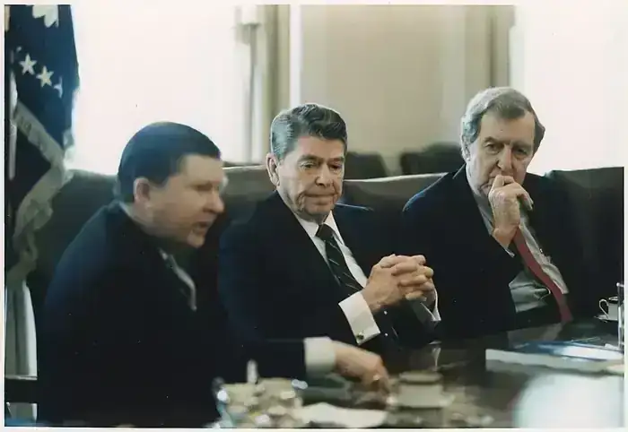
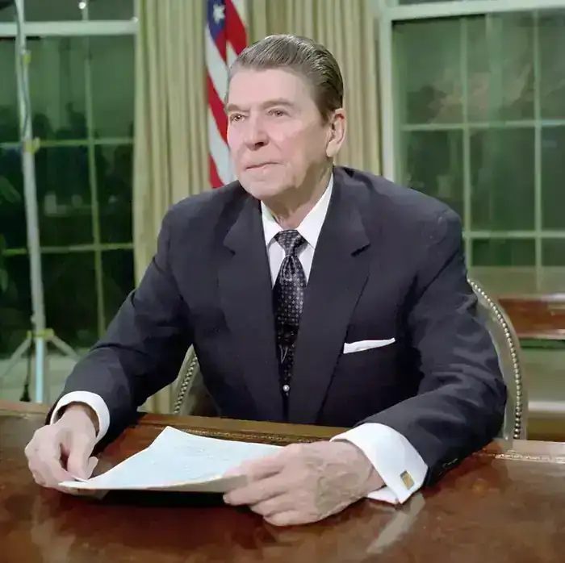
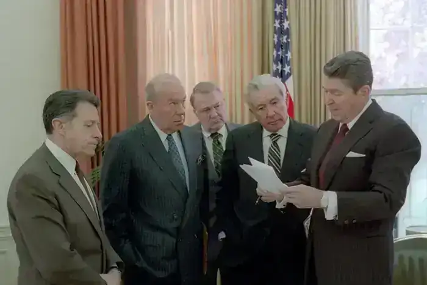

The scheme
Between 1985 and 1986, senior officials in the Reagan administration arranged sales of arms to Iran — then subject to an arms embargo — in the hope of securing the release of American hostages in Lebanon. Proceeds from the sales were diverted to the Contras in Nicaragua, in violation of the Boland Amendment, which barred military aid.
Maps, diagrams and images






The exposure
The scheme unravelled in November 1986 when a Lebanese magazine reported it. A presidential commission, a congressional investigation and an independent counsel followed. Eleven officials were convicted; most convictions were overturned on appeal or vacated, and several were pardoned by the first President Bush.
The affair is the clearest documented case of a covert policy run outside congressional oversight, and its details are in the public record.
Documented: the arms sales and the diversion.
Documented: the violations of the embargo and the Boland Amendment.
Documented: the investigations and the convictions.
Contested: how far up the chain responsibility reached.
The label: documented.
Why it is in the archive
Because it is the case the conspiracy literature is right about, and it is right because the documents were eventually published.
Open resources on this topic
- BookCIA Reading Room cia-rdp90-00965r000403560001-6: IRAN-CONTRA STORM IS HARDLY CREATING RIPPLE IN NICARAGUA — CIA Reading Room · 1987 (Internet Archive, free to read)
- BookCIA Reading Room cia-rdp90-00965r000504550015-0: ON TUESDAY, CONGRESS RAISES CURTAIN ON IRAN-CONTRA AFFAIR — CIA Reading Room · 1987 (Internet Archive, free to read)
- BookCIA Reading Room cia-rdp90-00552r000302970001-1: INOUYE, RUDMAN TO HEAD SENATE IRAN-CONTRA PROBE — CIA Reading Room · 1986 (Internet Archive, free to read)
- PapersOpen-access articles: DOAJ · PubMed Central · Internet Archive Scholar
- BooksPublic-domain and borrowable copies: Open Library · Project Gutenberg · Google Books
More images
Cite this page
Momin, S. (2026). Iran–Contra. The Larger World Archive. https://drsamonline.github.io/LARGE_GLOBE/iran-contra.htmlMomin, Sohil. “Iran–Contra.” The Larger World Archive, 2026, https://drsamonline.github.io/LARGE_GLOBE/iran-contra.html.Momin, Sohil. “Iran–Contra.” The Larger World Archive, 2026. https://drsamonline.github.io/LARGE_GLOBE/iran-contra.html.@misc{irancontra2026iran,
author = {Momin, Sohil},
title = {Iran–Contra},
year = {2026},
howpublished = {The Larger World Archive},
url = {https://drsamonline.github.io/LARGE_GLOBE/iran-contra.html},
note = {Last reviewed 20 November 2026}
}Last reviewed 20 November 2026 · Corrections policy · this page is not peer reviewed
Sources for this page
- Wikipedia, “Iran–Contra affair” — the scheme and the investigationsen.wikipedia.org
- Wikipedia, “Boland Amendment” — the law violateden.wikipedia.org
- Wikipedia, “Contras” — the recipientsen.wikipedia.org
- Wikipedia, “National Security Council” — where it was runen.wikipedia.org